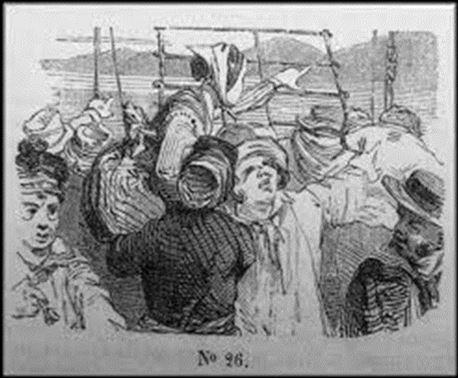
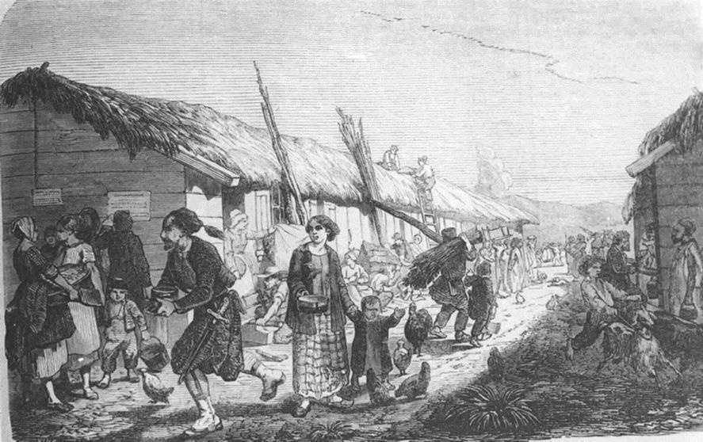
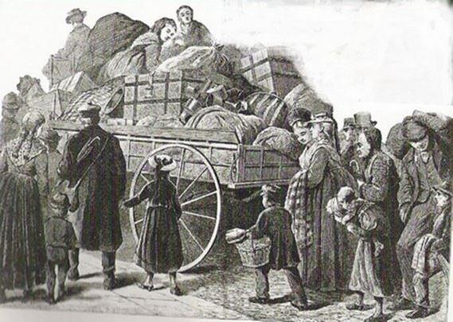
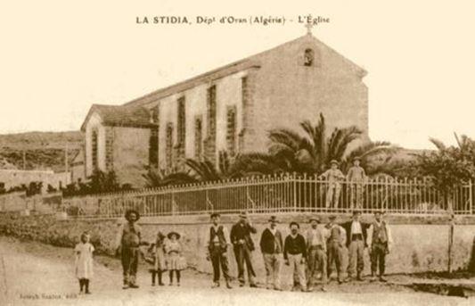
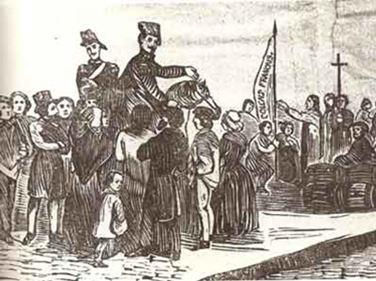
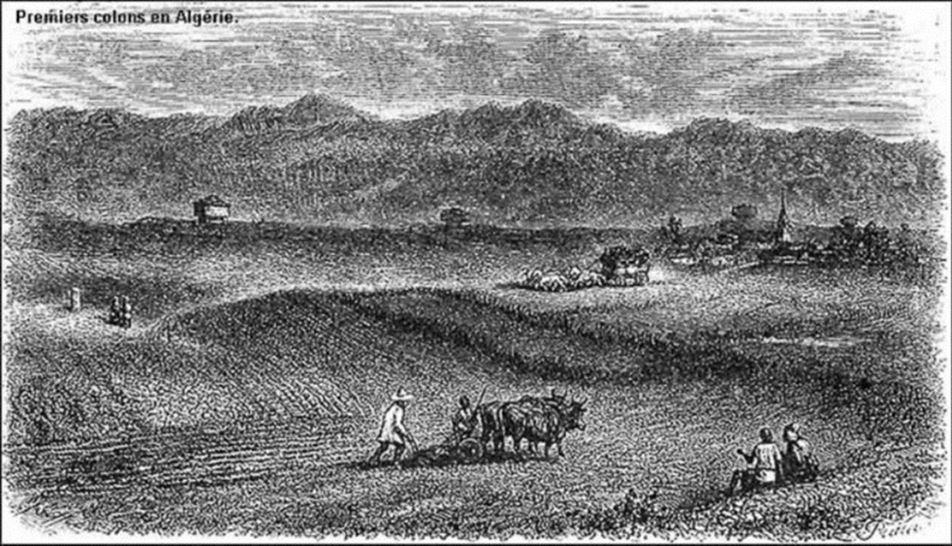
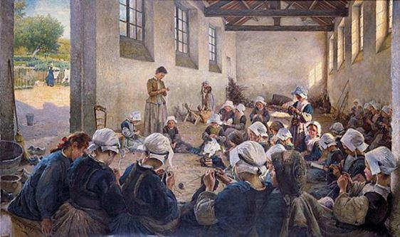

« Du temps de la France, l’Algérie c’était le paradis ! »
HOCINE AIT AHMED, chef historique du F.L.N algérien
La question de la mémoire entre la France et l’Algérie demeure toujours, plus d’un demi-siècle après l’indépendance, un problème récurrent savamment entretenu par les chefs d’état de ces deux nations…
Les trois derniers présidents français ont pointé, chacun à leur manière, la responsabilité française dans la guerre et la colonisation, dénonçant tour à tour, une France qui « manquait à ses valeurs universelles » pour François Hollande, et un système colonial « profondément injuste », pour son prédécesseur Nicolas Sarkozy.
Le 15 février 2017, à Alger, le candidat à la présidentielle Emmanuel Macron, choisit de condamner la colonisation française en Algérie en ces termes :
« C’est un crime, un crime contre l’humanité, c’est une vraie barbarie. Et ça fait partie de ce passé que nous devons regarder en face, en présentant nos excuses à l’égard de ceux envers lesquels nous avons commis ces gestes. »
La France avait donc commis un « crime contre l’humanité » lorsque, en 1830, elle avait abordé les côtes algériennes dans le but essentiel de mettre fin à la terreur barbaresque en Méditerranée, libérer les esclaves chrétiens et éradiquer la traite des blanches liée à la culture du harem… Et il aurait fallu « présenter nos excuses » à l’égard de ceux qui pillaient, rançonnaient, massacraient et réduisaient en esclavage (principalement) la chrétienté ?…
Si Monsieur Macron avait pris la peine de s’informer sur les raisons réelles de cette expédition, il aurait appris qu’à cette époque, l’Algérie n’était pas un territoire indépendant mais une possession turque. Elle ne constituait pas un État, encore moins une nation. Elle n’avait pas de frontières.
Elle constituait une mosaïque de tribus qu’aucun lien, sauf le religieux, n’unissait entre elles… et encore seulement d’une façon très fragmentaire. La mission remplie, qu’allait-on désormais bien pouvoir faire de ce pays libéré de la tutelle turque ?
Si la France abandonnait le terrain, tout donnait à penser que d’autres États lui succéderaient, particulièrement l’Espagne et l’Angleterre. À quoi auraient donc servi tant d’efforts ? De sacrifices humains ? D’argent dépensé ?...
Alors, la conquête du pays fut décidée et avec elle, l’envoi des premiers colons…
En 1848, après les sanglantes journées de juin, le gouvernement français choisit de faire de l’Algérie un lieu de déportations et c’est pour éviter une nouvelle révolution que, le 19 septembre 1848, l’Assemblée Nationale vota 50 millions pour la création de 42 « colonies de peuplement » ou « centres agricoles » pour établir 13500 « colons » français dans le but « d’occuper » ces Parisiens jeûneurs malgré eux et qu’on devinait prêts à se faire turbulents.
Les premiers déportés furent les « communalistes », qui devaient être rejoints en 1852 par ceux qui avaient osé répondre « NON » au plébiscite, puis par les Alsaciens-lorrains de 1870. Que savaient les uns et les autres de l’Afrique ? Pas grand-chose… si ce n’était que le pays était chaud, où les soldats enjuponnés de rouge qu’on appelait zouaves se battaient six jours sur sept contre les « Mahoms » dont le péché mignon était de couper la tête aux Chrétiens, et que certains civils, dont on avait dit qu’ils étaient allés chercher fortune par là-bas, n’étaient plus reparus.
Ils retrouvèrent sur place ceux qui, depuis une dizaine d’années déjà, pataugeaient dans les boues des marécages infestés de miasmes, rongés par le paludisme et la malaria, la cervelle à moitié cuite sous l’aveuglant et lourd glissement du sirocco et qui étaient partis vers l’Afrique, comme on se met en marche vers la terre promise…
On avait promis à ces malheureux des merveilles… ils découvrirent un désert, une lande hérissée de broussailles au bord d’un marais pestilentiel où pullulaient les moustiques. Mais ils ne pouvaient pas repartir ! Ils étaient pris au piège de leur propre rêve, prisonniers de l’Afrique… et déjà promis à la malédiction qui allait s’abattre sur elle…
Dans un pays où certaines régions de colonisation étaient en majeure partie des marécages, le paludisme faisait des ravages effrayants. En 1841, dans son étude « Solution de la question d’Algérie », le général Duvivier écrivait :
« Les plaines telles celles de la Mitidja, de Bône et tant d’autres ne sont que des foyers de maladies et mort. Les assainir, on n’y parviendra jamais… Les plaines pour les Européens, sont et seront toujours longtemps de vastes tombeaux. Qu’on abandonne ces fétides fosses ! ».
Vastes tombeaux ! Fétides fosses ! Quel programme engageant ! Et le général Berthezène d’affirmer, menaçant :
« La Mitidja n’est qu’un immense cloaque. Elle sera le tombeau de tous ceux qui oseront l’exploiter ! ».
Pourtant, quelques années plus tard, à force de courage, de patience, de persévérance, d’abnégation, mais aussi de privations, de souffrance, de misère et de centaines de morts usés à la tâche, la Mitidja, « ce marais pestilentiel », devint la perle et la plus riche contrée agricole de l’Algérie : « la première victoire de la quinine », « la plus belle réalisation du génie colonisateur de la France », « l’émeraude pêchée dans la vase », écrira le colonel Trumelet.
Typhus, choléra frappèrent inexorablement. Bugeaud, rentré en France, mourra du choléra en 1849. Dans les Centres de colonisation, où l’hygiène était rudimentaire, ce mal surtout faisait des ravages terribles. Des villages entiers furent décimés.
Chacun était désormais lié au sol, au ciel, aux périls de toujours et devait se défendre, à la fois, contre les éléments et les bandes armées qui parcouraient le pays. Elles le ravageaient au jour le jour, sans plan arrêté. L’insécurité régnait partout. Les cavaliers en burnous, les yatagans, les Hadjouths et les pillards se chargeaient de trancher les gorges et d’enlever les femmes pendant que les hommes tentaient de maîtriser les meules de fourrage en proie aux flammes, produit de leur labeur de forçat.
Dans les cimetières, les rangées s’ajoutaient aux rangées où s’affirmait ainsi le commencement d’un peuple. L’Afrique devenait une « terre à sépultures »…
Rien de ce qu’ils avaient rêvé ne s’était accompli comme ils l’avaient espéré. Tout s’était passé autrement, avec plus de dureté et de cruauté, mais à force d’énergie à travers les échecs, les souffrances, les malheurs, à force de volonté, de patience et de génie, ils avaient donné un sens à ce que le destin et l’Histoire leur avaient confié.
Alors arrivèrent pour essayer de vivre à côté de ces Français têtus, des frères latins, tout aussi miséreux : Espagnols, Italiens, Maltais, Génois, Siciliens… Un point commun les unissait : l’extrême misère ! L’Algérie –leur avait-on déclaré- c’était l’eldorado ! Et puis, ce pays était plus proche de l’Europe que la Californie…
Comme il y eut un rêve américain après la seconde guerre mondiale, il y eut à partir de 1840, un rêve algérien…
« Français de France », les fils de cette France qui les avait exilés protestèrent contre l’intrusion de ces nouveaux défricheurs :
« Ne sommes-nous pas capables d’arriver nous-mêmes à nos fins ? Ne l’avons-nous pas suffisamment prouvé ? »
La mère-patrie leur répondit doucement :
« Ces étrangers sont là pour vous aider dans votre tâche. Ils auront des terres qui auraient fini par vous tuer. Ils réussiront à n’y pas mourir, habitués qu’ils sont déjà à la grande misère, à l’extrême fatigue. Ne les renvoyez pas ! Accueillez-les au contraire en associés ».
Tous, étaient des déportés de la politique et de la misère, des réfractaires, des exilés, mais ils portaient en eux ce germe qui s’appelle l’audace et que leurs parents demeurés dans les vieux pays d’Europe allaient inexorablement laisser mourir comme des semailles gelées.
Ensemble ils édifièrent cette Afrique latine qui, en bonne justice, se fondit, s’harmonisa en une seconde France. C’est ainsi que la grande famille européenne se forma et à côté d’elle, la famille musulmane commença à concevoir que ces roumis n’étaient –tout compte fait- ni des adversaires, ni des parasites, et que par conséquent il n’était nul besoin de leur couper la tête… Elle se risqua, se rapprocha, écouta, puis accepta l’invitation à l’initiation.
Les étrangers poussaient la charrue un peu plus loin que les Français. Les Arabes consentaient à venir à la rescousse de l’effort des uns et des autres.
L’Afrique du Nord toute entière devenait un musée ethnographique où allaient commencer à se désintégrer dans le silence baignant des paysages vitrifiés, les débris de toutes les races du monde méditerranéen donnant naissance à une nouvelle race : Les Pieds-Noirs.
La foi, l’amour, la bonne volonté, la ténacité, les sacrifices, la confiance, les chagrins n’avaient pas manqué. Et tout cela, avec les morts et avec les vivants, avec ceux qui creusaient, ceux qui labouraient, ceux qui conseillaient, tout cela, ensemble, avait contribué à écrire l’histoire de l’Afrique du Nord.
Ils fondèrent une colonie à l’image de la France, offrirent aux indigènes les premiers enseignements de notre culture, débrouillèrent à notre intention l’écheveau des connaissances locales indispensables. Puis, satisfaits de leur effort, ils demandèrent à cette terre qu’ils avaient prise de les accueillir dans son sein pour l’éternité et ils s’éteignirent, loin des doux réconforts de la mère patrie.
La France, du reste, n’avait pas attendu leur décès pour les rayer du nombre de ses enfants. Dès leur départ, souvent définitif, elle avait considéré comme perdus ceux qui allaient porter au loin son renom et son drapeau. Elle avait revu sans gratitude ceux d’entre eux qui revenaient lui consacrer leur vieillesse, alors que d’autres ne purent même pas atteindre le port et succombèrent en mer.
C’est ainsi que naquit, grandit puis se dissipa dans des vapeurs de sang, de larmes et de passions, un miroir épique vers quoi des millions d’hommes et de femmes marchèrent en portant les douleurs et les enchantements de l’amour.
Si les pierres de gloire ne gardent pas leurs noms, si leur sacrifice est demeuré anonyme, nous n’en devons que davantage apporter l’hommage de notre piété reconnaissante à ces rudes artisans de la plus splendide entreprise française qui ait jamais été tentée.
En deux siècles, sous deux Empires et quatre Républiques, ces hommes allaient servir dans les Armées françaises. Officiers ou simples soldats, la plupart du temps, volontaires, ils allaient être de tous les combats mais aussi de toutes les tâches quotidiennes, même les plus modestes.

École de jeunes filles en Algérie
Pour les morts et pour les blessures du corps et de l’âme, la France leur décerna des croix… puis elle les combattit, les chassa de cette terre ingrate qu’ils avaient arrosée de leur sueur et de leur sang, et les effaça de sa mémoire.
En politique, c’est peut-être la foi qui sauve, mais ce sont les œuvres qui comptent. C’est par ses œuvres que l’Algérie, fille de la force française, a montré au monde qu’elle n’a pas démérité des magnifiques énergies qui se sont, aux temps héroïques, inclinées sur son berceau. Ce rêve de misère ensoleillé dura 132 ans et il durerait encore si les forces du mal n’avaient pas en ce monde souvent l’avantage sur les apôtres du bien.
Partager cette page